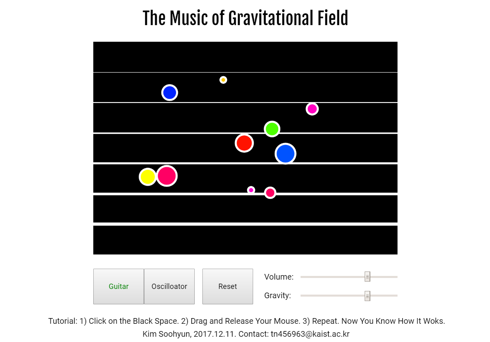
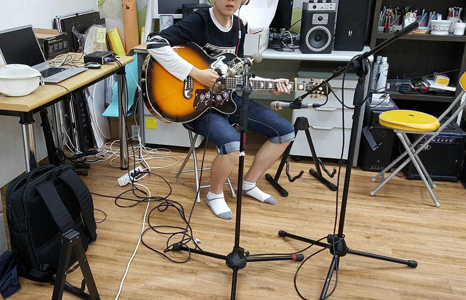
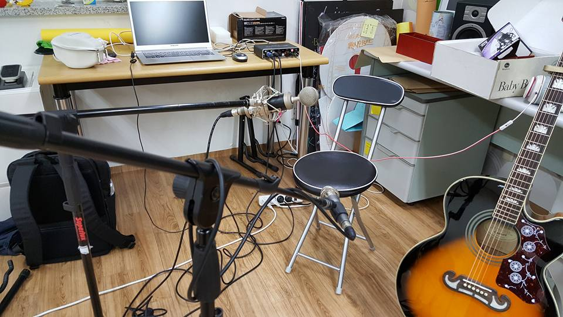

CTP431 Final Project
20160122 김수현
The Music of Gravitational Field
프로젝트 링크: 여기를 클릭
1. Introduction
사용자가 검은 화면을 클릭해서 드래그를 한후 마우스를 놓으면 움직이는 입자를 만들 수 있다. 초기 속도는 마우스를 드래그한 방향과 드래그한 거리에 의해 정해지며 이는 시각적으로도 표현되어있다. 사용자는 연속해서 입자를 계속 만들며 화면에 추가할 수 있는데 이들 입자들은 서로 중력 상호작용을 한다. 물리법칙 하에서 이루어지는 이들 입자들의 운동이 어쿠스틱 기타를 연주하거나 오실로스코프를 연주한다.
첫째로, 시각적인 물리 현상을 음악으로 표현한다면 어떨까? 라는 궁금증에서 시작했다. 음악 시각화 과제로 음악을 우주가 움직이는 모습으로 시각화하는 것을 시도했었다. 그 반대로 우주가 물리 법칙에 따라 움직이는 모습을 음악화하면 어떤 결과가 나올지 실험해보고 싶었다는 생각이 출발점이었다.
둘째로, 인간의 의지에서 벗어나 음표들이 서로 상호작용을 해서 운동하며 음악이 연주된다면 어떻게 들릴까? 라는 궁금증으로 이어졌다. 이 프로젝트에서의 입자들은 음악적으로 보면 음표를 상징한다는 생각으로 이어졌기 때문이다.
음악이 연주될 때 각 note들은 인간의 의지와 기호에 맞는 음악 규칙에 따라 순차적으로 이어지고 그들 사이의 시간 간격이 정해진다. 그 규칙에 적합하게 오선표에 그려진 음표들은 그들 사이에 어떠한 힘, 상호작용 따위가 존재하지 않고 순간순간 정적으로 존재한다. 그런데 만약 인간에게 맞는 음악 규칙을 벗어나 음표들이 직접 서로 끌어당기는 힘을 작용하면서 다음 위치로 '운동'한다면 어떤 음악이 연주되는지 실험해보고 싶었다.
이 본래 의도를 충실히 따르는 것은 '오실로스코프 모드'이다. 그러나 '오실로스코프 모드'는 의도는 충실하나 확실히 인간의 음악적 기호와는 거리가 있는 결과를 들려주기 때문에 인간의 음악적 기호와 적절하게 타협을 해서 듣기 좋게 만든 '어쿠스틱 기타 모드' 역시 구현했다. 이 모드는 각 note가 인간의 화성에 맞는 피치를 가지도록 제한을 둔 것이다.
어쿠스틱 기타 모드의 어쿠스틱 기타 샘플은 내가 직접 연주, 녹음, 후처리 작업을 해서 만들었다.
3. Components

- 검은 화면
1) 사용자가 검은 화면을 클릭하면 해당 위치에 입자가 생긴다. 반지름과 색깔은 랜덤하게 정해진다. 입자의 질량은 반지름에 비례한다. 즉 반지름은 질량을 시각화해서 나타낸 것이며 질량은 음표의 세기를 나타낸다.
2) 클릭한 채로 마우스를 드래그하면 흰색 화살표가 그려지는데 이는 초기 속도를 시각화한 것이다. 사용자는 화살표를 보면서 초기속도를 직접 정해줄 수 있다.
3) 마우스를 놓으면 정해진 초기 속도로 입자가 운동을 시작한다.
- 입자들
입자는 생성된 후 시각적으로는 중력 상호작용에 의해 운동하는 한 질점을 나타내고, 음악적으로는 중력 상호작용에 의해 결정되는 한 음표, 음상을 나타낸다.
1) 질량(시각적으로는 반경에 비례)에 비례하도록 소리의 volume이 기본적으로 결정되고 입자의 속도에 따라 modulate된다. 입자의 운동량에 의해 volume이 변하는 것이다.
2) y축의 위치에 따라 소리의 피치가 결정된다.
3) x축의 위치에 따라 음상의 패닝이 결정된다. 입자들은 독립적인 스테레오 음상을 가진다.
- Guitar Mode Button
클릭하면 기타 모드로 바뀐다.
- Oscilloscope Mode Button
클릭하면 오실로스코프 모드로 바뀐다.
- Reset Button
클릭하면 생성되었던 입자가 모두 리셋되어 아무것도 없는 화면으로 돌아간다.
- Volume Slider
총 볼륨을 조절한다.
- Gravity Slider
입자들의 중력 상호작용의 정도를 조절한다. 구체적으로는 중력 상수를 조절하는 것이다. 슬라이더가 0의 위치에 있을 땐 중력 상호작용이 전혀 없다. 입자들은 각기 등속도 운동을 한다.(기타 모드의 경우 이는 일정한 박자의 아르페지오 연주가 된다.) 슬라이더의 값을 증가시킬수록 입자들간의 중력 상호작용이 강해진다.
3. Method
- 프로그램 구조
구조적으로 이는 사용자가 반복해서 스택에 데이터(화면에 입자로 시각화되는 정보들)를 입력하는 구조이다. 사용자가 마우스 클릭-드래그 과정으로 데이터 값을 지정하면 마우스를 놓았을 때 정보들이 어레이에 push되는 구조이다.
클릭하고 드래그 하는 동안은 새로 만들어진 입자가 움직이거나 다른 입자와 상호작용하지 않도록 별도의 클래스를 만들어 다루어줘야하고, 클릭 또는 드래그가 검은 화면 밖을 넘어갔을 땐 입자가 생성되지 않도록 해준다.
로딩 중에는 Loading...이라는 메세지가 화면에 뜨게 한다. 로딩 중에는 리셋 버튼이 작동하지 않도록 막아야한다. 아직 로드되지 않은 SoundFile에 접근하려는 시도를 방지해야한다.
입자가 생성될 때마다 해당 입자에 해당하는 24개의 기타 샘플을 로드한다. 샘플을 한 번만 로드하고 계속 이용해보려하였으나 play되는 도중에 다시 play가 될 때 pan의 값이 변하면 클리핑이 생기는 것을 막을 수가 없어 부드러운 연주를 위해 매번 다시 로드를 한다. (매번 pan의 값이 변하지 않으면 sustain 모드로 play를 해주면 클리핑이 생기진 않는다. 매번 pan이 변해버리면 이 방법도 안 됨을 확인했다.)
각각의 입자에 대해 다른 입자와의 모든 중력을 중첩의 원리로 벡터합을 해주고 운동방정식을 구현해준다.
- 기타 샘플 녹음
기타 샘플 녹음은 아래 사진과 같은 마이크 배치에서 진행되었다.(사진은 이번 프로젝트 진행 중에 찍은 것은 아니나 같은 방식으로 했다.) 4개의 코드, 각각 6개의 기타줄을 피크로 긁은 샘플을 녹음했다. 샘플에 적절한 리버브와 컴프레서를 걸어주었다.


4. Discussion
- Technical Difficulty
1) 프로그래밍 구조 측면에서는, 사용자와의 interaction이 순차적으로 연속되고 그 와중에 파일 로드도 해야되는 구조인만큼 사용자가 갑자기 끼어들어서 발생시킬 수 있는 모든 예외 케이스들을 꼼꼼히 고려해야 전체 과정이 수려하게 진행되도록 할 수 있었다.
2) 기타 샘플링을 직접 혼자 해본 것이 도전이자 좋은 경험이었다. 대중음악 장르의 곡을 작업하면서 기타 녹음을 여러 번 해보았는데 그 때는 어쿠스틱 기타 트랙에 잡음이 어느 정도 있어도 다른 트랙과 믹스를 하면서 왠만한 작은 잡음들은 마스킹되서 안 들리기 때문에 신경이 쓰이지 않았는데, 오직 하나의 note만을 연주해서 녹음하는 이번 작업은 연주의 시작과 sustain~release까지 잡음이 생기지 않도록 신경을 곤두세워야하는 점이 힘들었다.
- 추가적인 아이디어들
내가 기타 연주에 익숙해서 기타 tab 형태로 시각화를 했는데, 오선지에 음표를 그리고 그 위에서 음표 기호들이 운동하면서 소리를 내는 것이 더 많은 사람들에게 음표들의 역학적 상호작용을 더 잘 은유하는 시각화로 다가가지 않을 까 생각이 들었다. 오선지 위에 음표를 흩뿌리고 자기들끼리 상호작용하면서 운동하는 도중에 사용자가 몇 번의 순간들을 캡쳐하고 각 캡쳐들을 하나의 마디로 이어붙여서 연주해보는 것도 재밌는 실험이 될 것 같다.
5. References
모든 코드(그래픽, 사운드)는 p5.js 라이브러리를 사용해서 만들어졌다.